Colecciones
Regresar
Colecciones
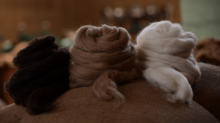
Colección Tops
Colección de la fibra de Alpaca - Tonos Naturales
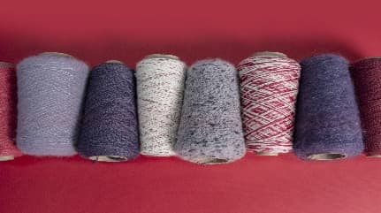
Tejido a Máquina
Colección de Hilados A/W 24-25
Prestige Line
Terra Line
Cloud Line
Organic Eco & Ras Line
Sock Line
Colour Trend & Natural Tones
Colecciones Previas
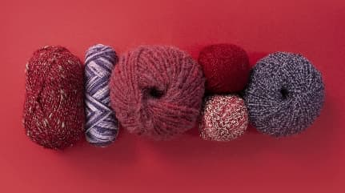
Tejido a Mano
Colección de Hilados A/W 24-25
Pure Line
Terra Line
Cloud Line
Organic Eco & Ras Line
Super Bulky Line
Apu Line
Colecciones Previas
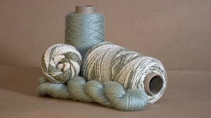
Spring Summer
(Nuevo)
Colección de Hilados S/S 24
Tejido a Máquina
Tejido a Mano
Colecciones Previas
Inspiración
Stock Service
Regresar
Stock Service
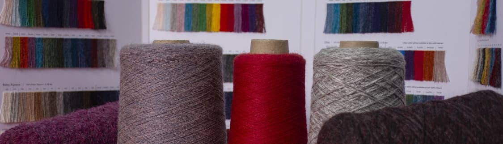
Stock Service
Colección de Hilados A/W 24-25
Tejido a Máquina
Tejido a Mano
Online Stock Service
Michell Labs
Regresar
Michell Labs
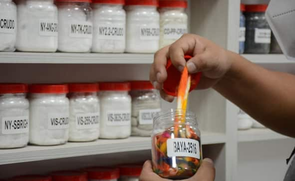
Innovaciones de Hilo y Color
EasyWash - Sustainable Green Colours - Upcycle Yarns - Mid.A/W
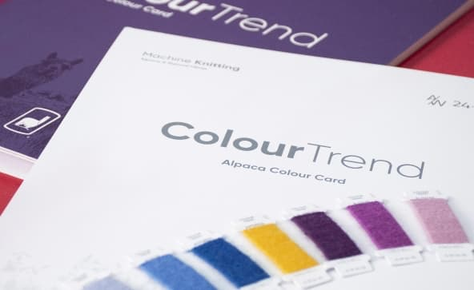
Colores Tendencia
Colores Tendencia en Alpaca a nivel Global
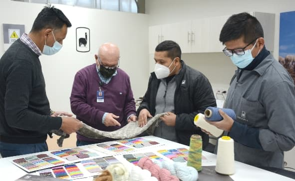
Crea tu propio Hilado
Nuestras Fibras – Tipos de Hilados – Tipós de Teñidos - Presentaciones
Origins
Regresar
Origins
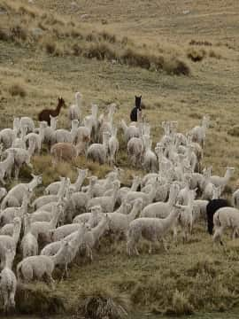
Origins
Los Pilares de Sostenibilidad
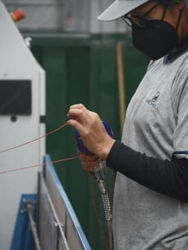
Compromiso Social
Comercio Justo Peru
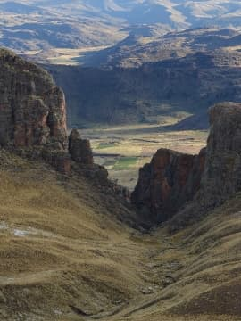
Compromiso medioambiental
Ser sostenible
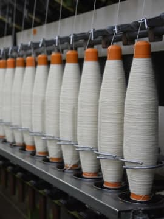
Compromiso económico
Nuestro enfoque económico
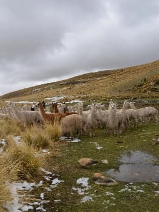
Trazabilidad
De dónde viene la fibra de alpaca
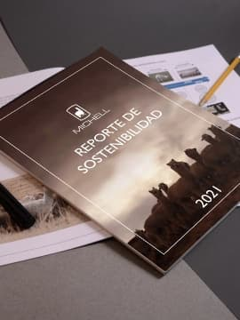
Reportes de Sostenibilidad
& Certificaciones
Certificaciones
Licencias
Alpaca Origin Mark
100% Alpaca
Alpaca Blend Mark
Blends
Certificaciones
Certified by Control Union, CU 847906
Certified by Control Union, CU 847906
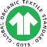
Certified by Control Union, CU 847906
Certified by Control Union, CU 847906
Certified by Control Union, CU 847906
Certified by Control Union, CU 847906
Certificaciones & Licencias
Como parte de nuestro compromiso de convertirnos en una empresa más sostenible, hemos obtenido las siguientes certificaciones, que demuestran no sólo que somos sostenibles, sino también que somos una empresa transparente.
Nosotros
Regresar
Nosotros
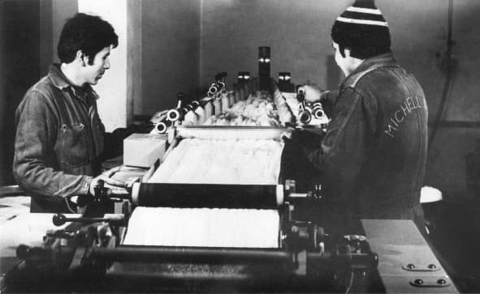
Nosotros
Pioneros en la Industria
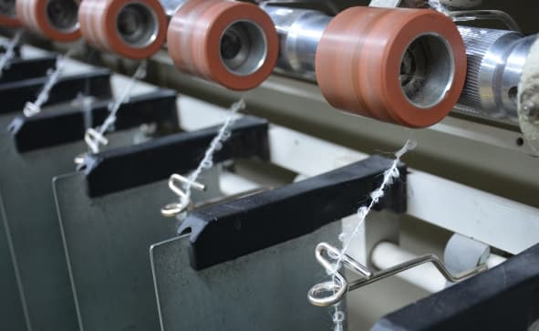
Misión & Visión
Nuestro compromiso
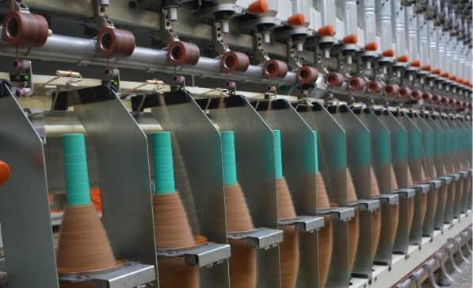
Proceso de producción
Transformación de la fibra
La Alpaca
Regresar
La Alpaca
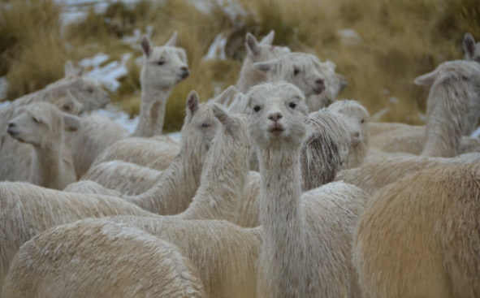
Historia de la Alpaca
Tesoro de los Andes
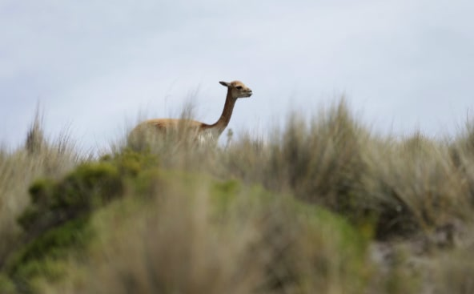
Camélidos sudamericanos
Llama - Guanaco - Vicuña
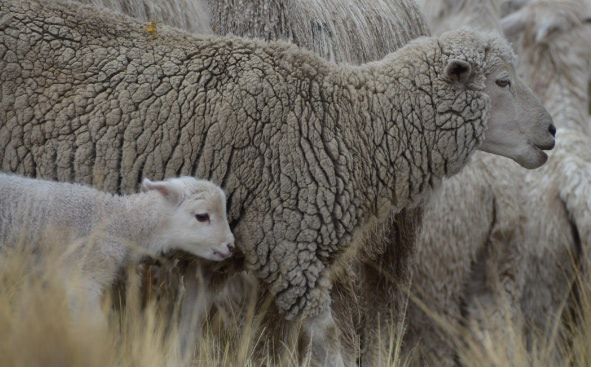
Lana Peruana
Andes Peruanos
Responsabilidad Social
Regresar
Responsabilidad Social
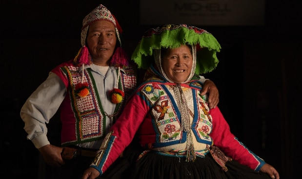
Responsabilidad Social
Empresa socialmente responsable
Mirasol
Una asociación civil sin ánimo de lucro
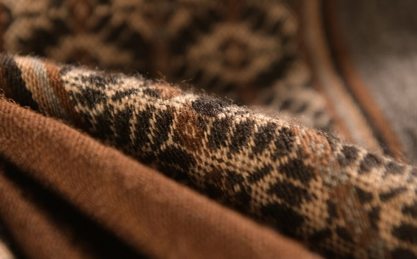
Concurso Arte Michell
Concurso Nacional de Arte del Perú
Contáctenos
Blog
SMV
Hechos de Importancia
Hechos de información
Memoria
Directorio
es
English
Español
Tejido a Máquina
Colección de Hilados A/W 24-25
Regresar
Terra Line
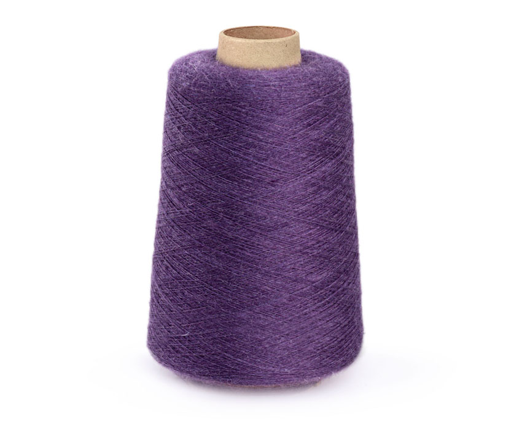
1. catariri
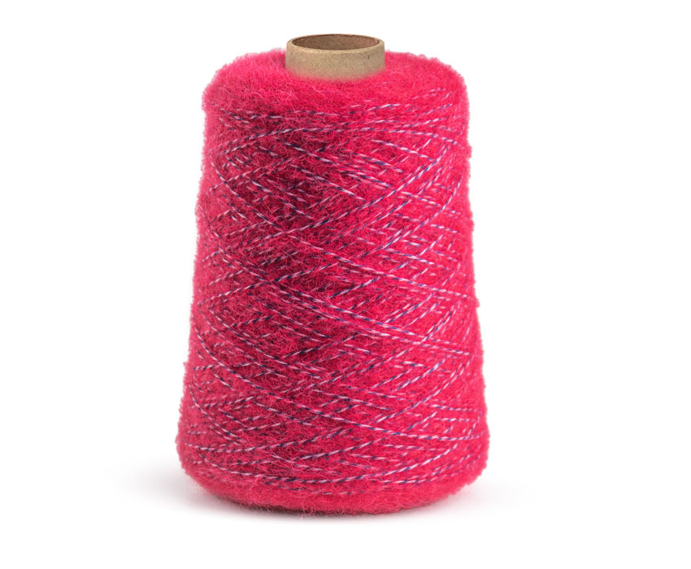
2. espinar
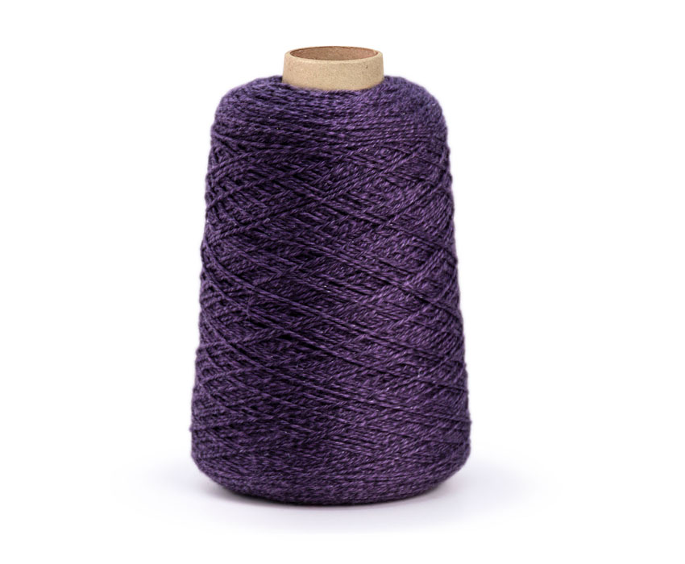
3. tacna
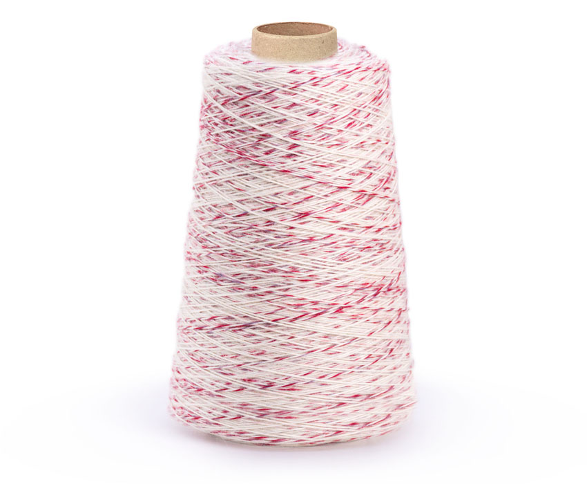
4. grau
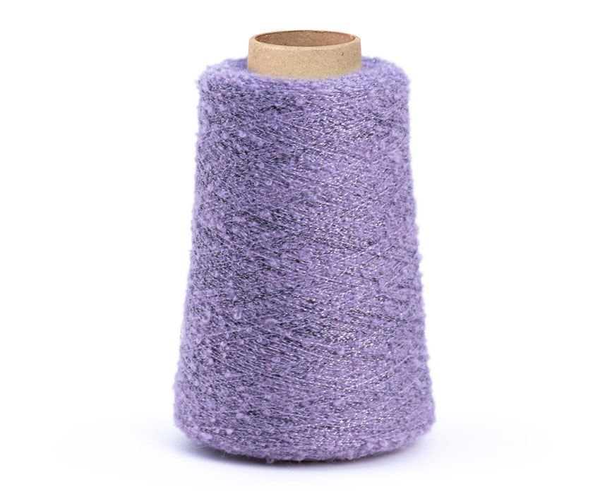
5. lamas
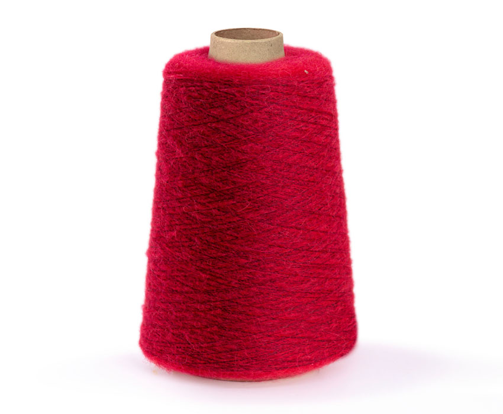
6. capaya/capaya brushed
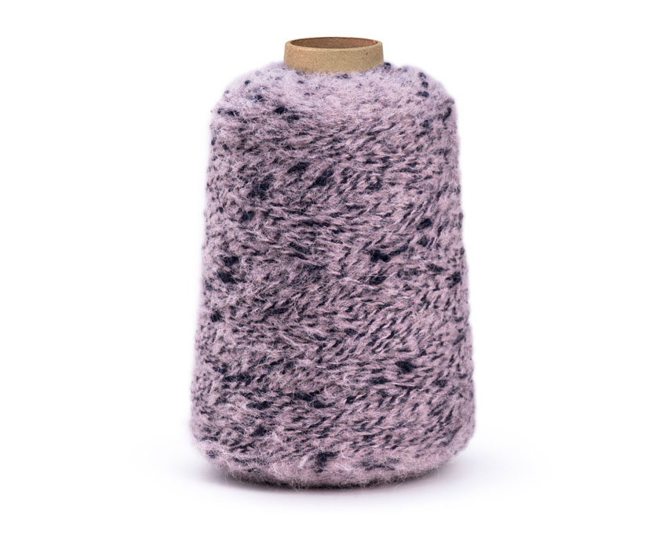
7. palpa
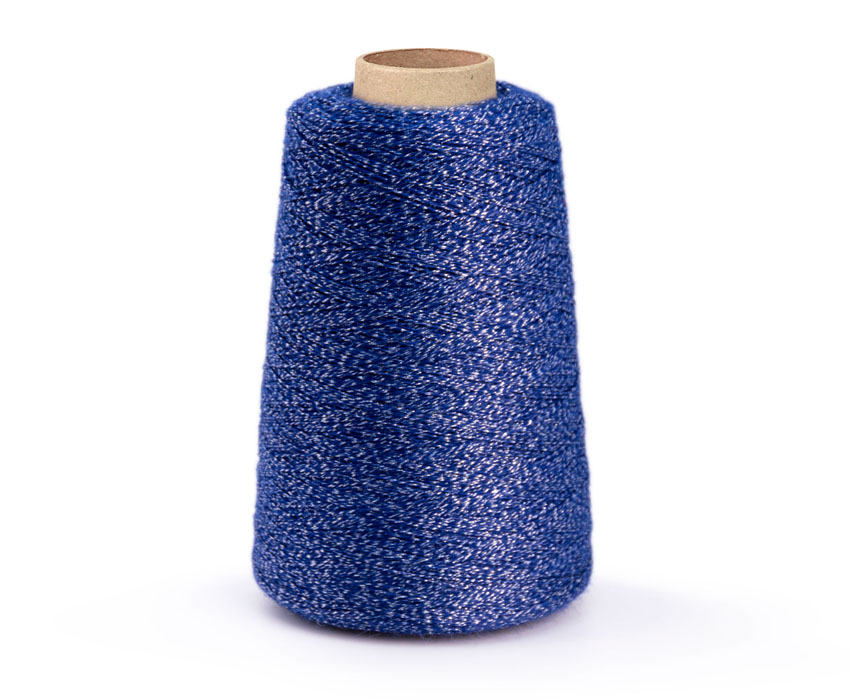
8. melgar
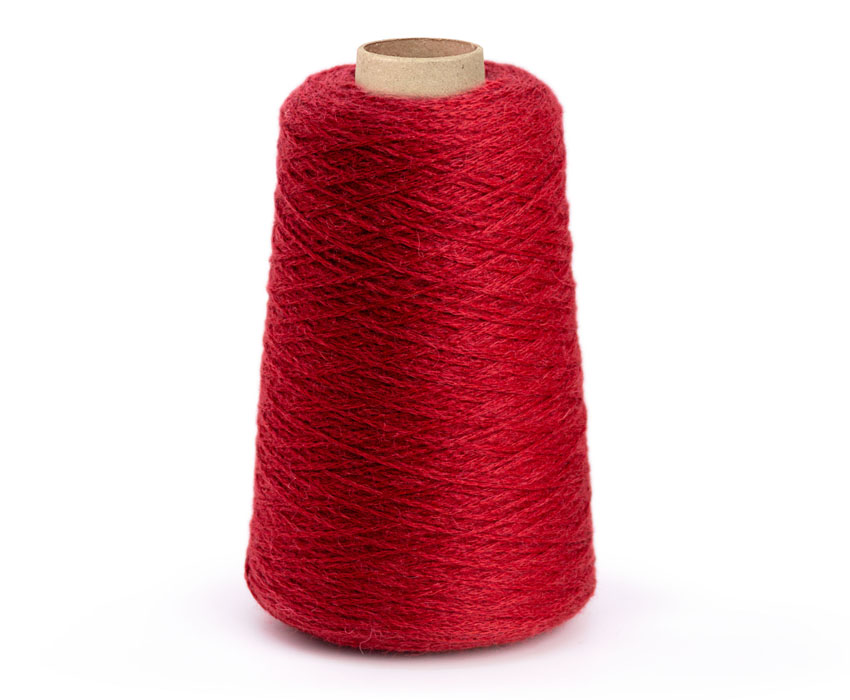
9. puncus
.svg)